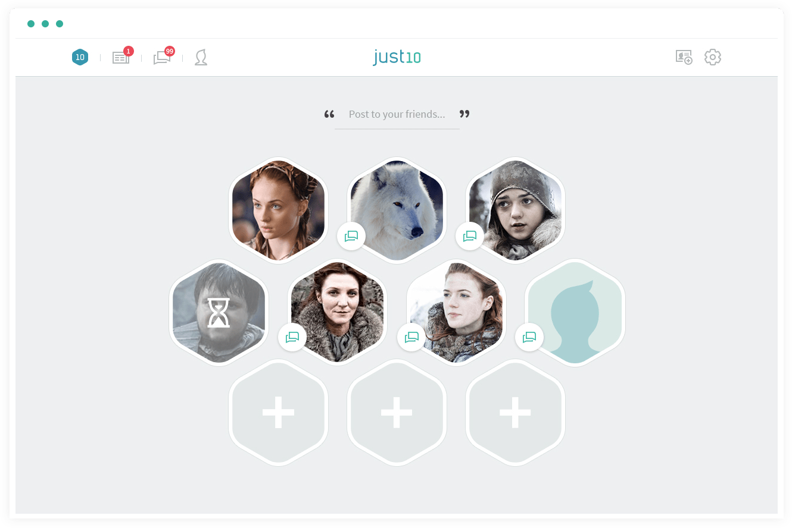
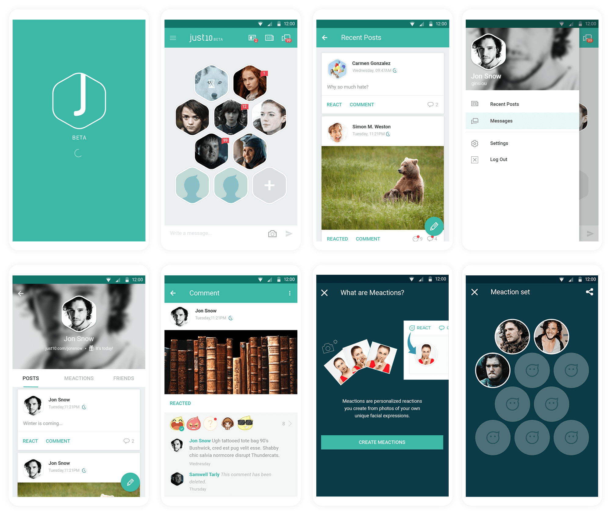

Just 10 is the most secure online social platform. Users can connect up to 10 friends. All posts and messages will be removed from completely after 10 days. Users will no longer need to worry about what they post online.
In modern day, everything we posted is being tracked. That embarrassing moment facebook reminded you of from the same day from years ago, the instagram post you liked that is causing related ads showing up in your feed, or that angry post you made about your coworkers when you forgot they are following you.
What if everything you and your friends post online is not tracked and gets removed from the public eye and even the database? Just 10 allows you to choose with whom you would like to share your posts and images with and have them removed within 10 days. The idea is to shape a better and safer online community for users where they can speak up freely to their trusted friends.

I collaborated with another UI designer to work on the final designs, responsive designs for all platforms (iOS, BlackBerry, and web), related assets and illustrations. I also worked on flow charts and wireframes for new features and enhancing existing ones.

The busier we get, the harder it is for us to maintain our close relationships with friends. Based on research, we found that no matter how big your social group is or the amount of friends your facebook account has, the number of your close friends are actually a lot less than you think. This is due to the time and energy we have to put into each friendship to maintain the relationship. Thus, the average of close friends one might have is just around 5. With this data and factoring in the differences with how people socialize with each other, we would like to experiment with 10 connections.